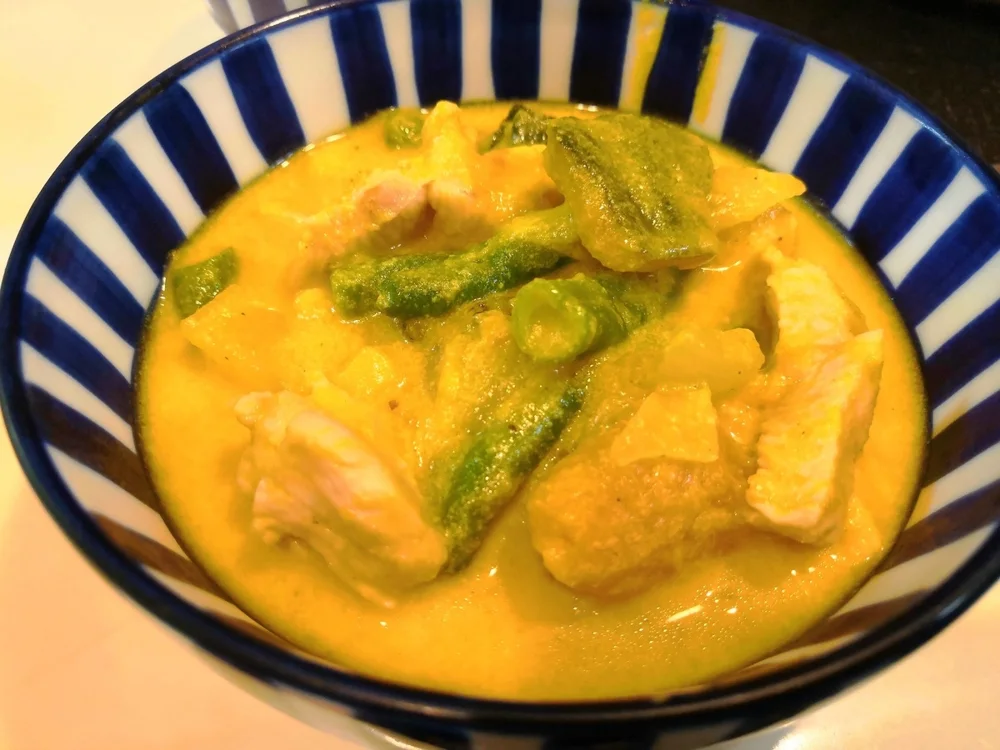

カレー・シチュー
おからパウダー入りインド風ダルチキンカレー
前の料理のおからパウダー入りチキンカレーに、缶詰のミックスビーンズを加えるダルチキンカレーです。「ダル」は豆を使うカレーの名前で見かける言葉
トマトとヨーグルトを使い、仕上げの煮込みでおからパウダーを加える、8人前のチキンカレーです。私がこのカレーで気に入っているのは、スパイシーな味わいの中に、じゃがいもが溶けたような口当たりが生まれるところです。

ここでは、普通の鍋での作り方を紹介します。圧力鍋がなくても作れますが、煮詰まり方を見ながら調理してください。
鶏肉の下味をつける時間は、煮込み時間とは別にとってください。塩やカレー粉は、下味用と仕上げ用に分けて使います。
にんにくや生姜は、弱火でじっくり炒めます。そのあと強火にし、鶏肉を軽く炒めてからトマトを加えます。
水分のもとは、トマト缶と下味に使ったヨーグルトなどです。最初から水を量って加える配合ではありません。普通の鍋で煮詰まりすぎた時は、水を足して調整できます。
おからパウダーは、量によってとろみが変わります。まず材料表の50gを加えて混ぜ、とろみと味を確かめてから調整してください。
表面に浮く油が気になる場合は、おからパウダーを加える前にすくい取る方法もあります。すくい取った量や栄養価は、このレシピからは確かめられません。数字で効果を考えるより、食べやすい仕上がりを目安にしてください。
8人前なので、調理前に材料全体を見て、無理なく混ぜられる大きさの鍋を用意しましょう。加熱中は、特に鍋底が焦げついていないか確かめます。
仕上げに、鶏肉の中心まで火が通っているかも確かめてください。
私は、残ったこのカレーでカレーうどんを作ったこともあります。
加熱時間は作った時の目安です。容器や調理器具によって仕上がりは変わります。中心まで火が通っていることを確認してください。
おからパウダー入りインド風チキンカレーの材料・作り方（50kgdiet.com） →
このページは書籍の改訂原稿をもとに掲載しています。元記事は過去の記録のため、材料や表現が異なる場合があります。
前の料理のおからパウダー入りチキンカレーに、缶詰のミックスビーンズを加えるダルチキンカレーです。「ダル」は豆を使うカレーの名前で見かける言葉

*蒸し大豆カレーの元記事の盛り付け例。ごはん・紅生姜・副菜は本文のカレー材料に含めません。* 調理済みのおからパウダーカレーに、作り置きの

バターで炒めたおからパウダーをルーの代わりに使う、かぼちゃのクリームシチューです。かぼちゃの甘味に、いんげんやコーンの食感が合います。